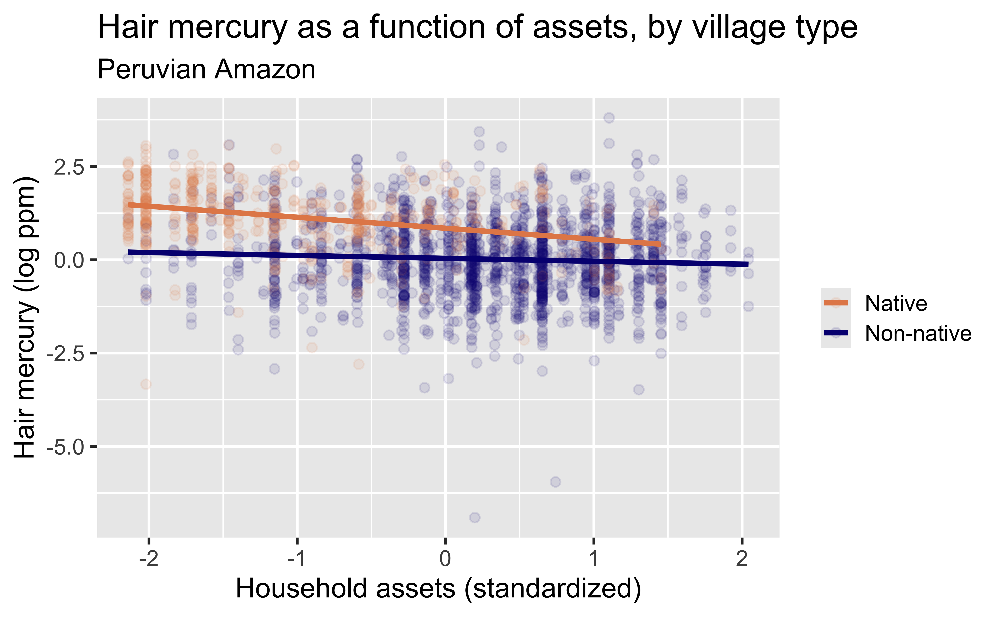

library(tidyverse)library(tidymodels)library(ggtext)library(knitr)library(kableExtra)options(dplyr.print_min =10, dplyr.print_max =6)mercury <- readr::read_csv("../data/mercury_reg.csv")mercury <- mercury %>%# scale() subtracts the mean and divides by the SD to make the units "standard deviations" like a z-scoremutate(assets_sc=scale(SESassets)) %>%#another variable we may use latermutate(form_min_sc=scale(FM_buffer)) %>%#so I don't have to remember codingmutate(sex,sex_cat=ifelse(sex==1,"Male","Female")) %>%mutate(native,native_cat=ifelse(native==1,"Native","Non-native")) # limit to one observation per household (household ID=1)mercury1 <- mercury %>%filter(withinid==1)
The linear model with multiple predictors
Multiple explanatory variables
We previously explored how the relationship between assets and mercury in hair depended on whether a person lives in a native community.
How, if at all, does the relationship between hair mercury and household assets of individuals vary by whether or not they live in a town classified as native?

This is an example of an interaction effect – the relationship between assets and mercury depends on the value of a third variable, community type.
ggplot(data = mercury, aes(x = assets_sc, y = lhairHg, color = native_cat)) +geom_point(alpha =0.1) +geom_smooth(method ="lm", se =FALSE) +labs(title ="Hair mercury as a function of assets, by village type",subtitle ="Peruvian Amazon",x ="Household assets (standardized)",y ="Hair mercury (log ppm)",color =NULL ) +scale_color_manual(values =c("#E48957", "#071381"))
where \(y_i\) represents log hair mercury for subject \(i\), \(x_i\) represents standardized assets, \(z_i=1\) if an individual lives in a non-native community and \(z_i=0\) otherwise, and \(x_iz_i\) is the interaction between assets and community status.
A natural question is whether the slopes of these lines are significantly different – do we have evidence of different relationships between assets and hair mercury for those living in native and non-native communities?
\(z_i=1\) for non-native community and \(z_i=0\) otherwise
Fitting this model, we get \[\widehat{y}_i=\widehat{\beta}_0+\widehat{\beta}_1 x_i + \widehat{\beta}_2 z_i + \widehat{\beta}_3 x_iz_i\] so the equations of the two lines in the figure are
You can see that at the mean asset level (\(x_i=0\)), those in non-native communities have lower hair Hg levels, and in native communities we see a stronger relationship between assets and hair Hg, with little change in hair Hg as a function of assets in non-native communities, but a decrease with increasing assets in native communities.
Comparing model fit
Let’s fit the assets-only model and compare it to the fit of this model.
We see the adjusted\(R^2\) has increased from 0.11 in the assets-only model to 0.21 in the model that contains community status and the interaction. Adjusted \(R^2\) is preferred to the standard \(R^2\) in a model with more than one predictor; \(R^2\) can never decrease when more variables are added, so it can be suboptimal at identifying predictors that are not helpful; adjusted \(R^2\) adds a penalty for having “too many” variables in a model.
Evaluating the interaction term
We can also conduct a formal hypothesis test of whether the interaction term improves our model \(y_i=\beta_0+\beta_1 x_i + \beta_2 z_i + \beta_3 x_iz_i + \varepsilon_i\) by evaluating \(H_0: \beta_3=0\) against the alternative \(H_0: \beta_3 \neq 0\).
If we look at the last line of output, corresponding to the interaction term, we see that the p-value is quite small, which leads us to reject the null hypothesis and conclude that the interaction term does add to the model fit.
Sex
Another variable that may help explain variability in hair Hg levels is sex. Let’s add it to see if that helps (\(male_i=1\) if male and 0 if not). Our model now is \(y_i=\beta_0+\beta_1 x_i + \beta_2 z_i + \beta_3 x_iz_i + \beta_4 \text{male}_i + \varepsilon_i\).
work through the model with and without interaction and the hypothesis test. first check the \(R^2\) from assets-only model and compare to this one using glance. then do interaction test to see if we need that.
Multiple explanatory variables
Code to fit this model is given below.
todo
Amy this is from the multiple regression part of the first diagnostics lecture in 2022
I fixed up the simple regression notes with more details, so now I can build from here.
You need the interaction. we can evaluate that, and interpret the different lines. Then add a predictor for which we don’t need an interaction – I have a more advanced model and can point out male isn’t important, can do a test of that, can note the \(R^2\) improved maybe due to age (mercury doesn’t leave right?), talk about 1-year vs 10-year increase in age and rescale age? Give interpretation conditional on other stuff in model held fixed.
fit <-linear_reg() %>%set_engine("lm") %>%fit(lhairHg ~ native_cat+age+assets_sc+sex_cat+native_cat*assets_sc,data = mercury) fit %>%tidy(exponentiate=TRUE,conf.int=TRUE)